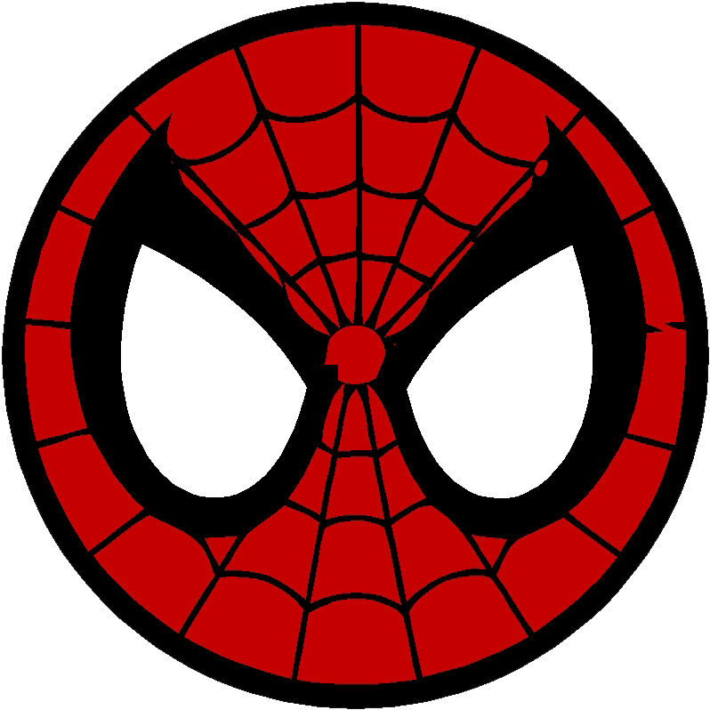
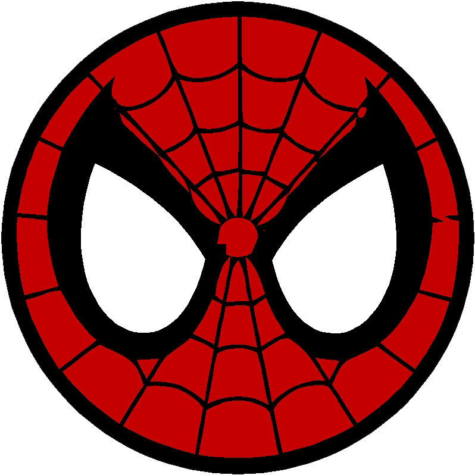
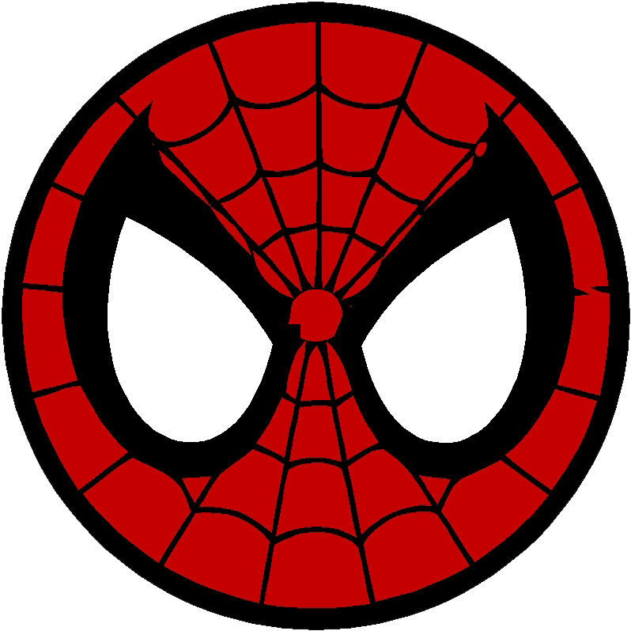

Pulse para abrir la carta
 

Pulse para abrir la carta

Hola mi amor.
Espero que te haya gustado mi regalito, quise sorprenderte haciendo lo que más me gusta.
Estoy muy orgulloso de nosotros, el haber llegado a dos años de relación demuestra que el compromiso de ambos es
sincero y que la conexión que tuvimos fue completamente real. Y magnifico aún más el hecho de estar en una
relación a distancia, sabiendo los sentimientos a los que estabamos expuestos, pero aun así nuestro amor es más
grande y decidimos lo que era más lógico (es lo que diría yo jijiji).
Sin embargo, como todas las parejas, pasamos algunos momentos tensos y tristes que pudieron quebrantar la
relación, pero esos problemas no le hicieron ni cosquillas y ahora estamos acá, celebrando un año más contigo a
tu lado mi vida.
Ya para terminar, estoy orgulloso de tí, eres una increíble persona y quiero que te quedes en mi vida para
siempre mi amor. Estaré ahí para tí y por tí.
Con mucho amor, Pedro.